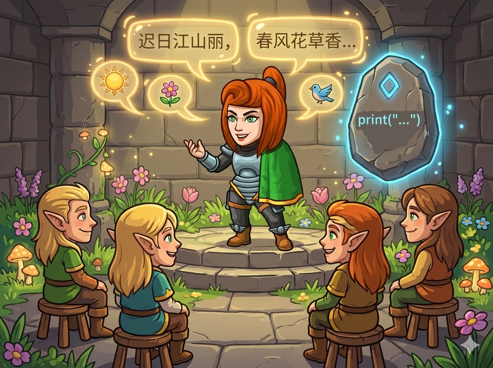

英雄和地牢里的精灵们成了好朋友！为了庆祝这份友谊，英雄决定为大家背诵一首描写春天的古诗。 精灵们围坐在一起，期待着你的表演。
👉 任务： 你需要用程序把这首诗，一行一行地展示在屏幕上。格式必须非常整齐，不能乱哦！

⚠️ 注意： 逗号是中文的 ， 句号是中文的 。 千万别写成英文标点！
这道题就像是我们在作业本上抄写课文，最重要的就是：按顺序 和 换行。
<< endl，就像你在写作业时按了一下回车键，光标就跑到下一行去了。print()，它打印完内容后，会自动帮你按一下回车键换到下一行。print，分别把四句诗放进去就好啦！快把这首优美的诗变成代码吧！
#include <iostream> using namespace std; int main() { // 第一行：说完后加上 endl 换行 cout << "迟日江山丽，" << endl; // 第二行 cout << "春风花草香。" << endl; // 第三行 cout << "泥融飞燕子，" << endl; // 第四行 cout << "沙暖睡鸳鸯。" << endl; return 0; }
# Python 会自动换行，所以我们只需要排队打印四次 print('迟日江山丽，') print('春风花草香。') print('泥融飞燕子，') print('沙暖睡鸳鸯。') # 每一句都写在引号里，别写错字哦！
💡 小贴士： 如果不想自己打字，可以把题目里的诗句复制粘贴到代码里，这样就不会有错别字啦！
cout 或 print 顺序不能乱。， 和 。），代码里的符号（如分号 ; 引号 ""）是英文的。